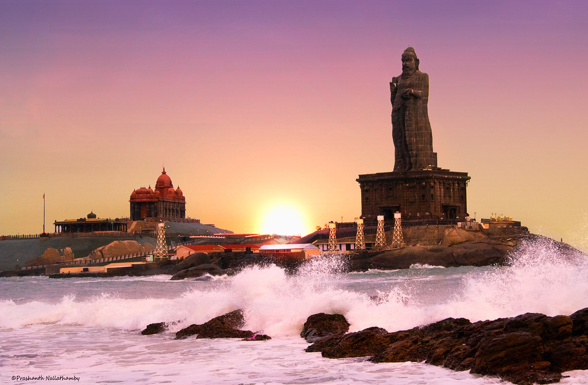

Sunrise

About Sunrise
- Spectacular View:The sunrise in Kanyakumari is renowned worldwide for its spectacular beauty. Due to its geographical location at the southernmost tip of the Indian Peninsula, visitors can witness a breathtaking phenomenon where the sun rises over the horizon, seemingly emerging from the waters of the Arabian Sea. The sight of the sun painting the sky in vibrant hues of orange, pink, and gold is truly mesmerizing.
- Meeting of Three Seas:Kanyakumari is a unique location where the Arabian Sea, the Bay of Bengal, and the Indian Ocean converge. This geographical feature adds to the allure of the sunrise experience, as spectators can witness the meeting of these three bodies of water illuminated by the rising sun. It creates a stunning panoramic vista that is unmatched elsewhere.
- Vantage Points:There are several vantage points in Kanyakumari from which visitors can enjoy the sunrise. The most popular spot is the Kanyakumari Beach, where crowds gather early in the morning to witness the spectacle. Other viewpoints include the Vivekananda Rock Memorial and the Thiruvalluvar Statue, both of which offer elevated platforms with unobstructed views of the sunrise over the sea.
- Cultural Significance:The sunrise holds cultural significance in Kanyakumari, drawing not only tourists but also pilgrims and devotees. Many visitors consider witnessing the sunrise in Kanyakumari as a spiritual experience, as it symbolizes new beginnings, enlightenment, and the eternal cycle of life. It is also a time for reflection and introspection, as people gather to greet the dawn with prayers and meditation.
- Tourist Attractions:Apart from the natural beauty of the sunrise, visitors to Kanyakumari can explore nearby tourist attractions before or after the sunrise experience. These include the Vivekananda Rock Memorial, the Kanyakumari Temple, and the Gandhi Memorial Mandapam. Many tourists plan their visits to coincide with the sunrise, allowing them to make the most of their time in this picturesque coastal town.